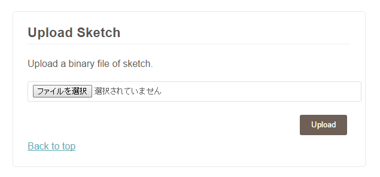
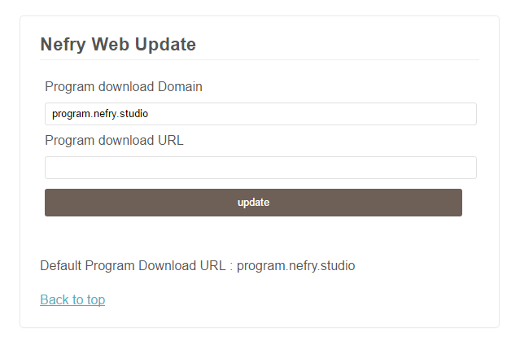
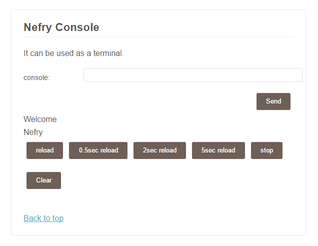

Nefryライブラリとは？
Nefryのライブラリーを使用していただきありがとうございます。
こちらのドキュメントは随時更新していきます。Arduino IDEでのプログラミングを想定しています。
Arduino IDEの使用時には#include<Nefry.h>を入力してから使用してください。
関数を呼び出す時には"Nefry.関数()"とすることで使うことができます。
例えばNefry.print("test");やNefry.reset();このように使うことができます。
どんなことができるの？(ソフトウエア)
Nefryのハードウエア×ソフトウエアで難しいIoTを簡単に扱えるようにしています。
Nefryが出力しているWiFiに接続すると自動的にWebページが立ち上がり様々な設定ができます。
- WiFiの設定ページ
WiFi関連関数のページ
Nefryに5つまでのWiFiを記憶させることができ、WiFiに接続するときに最も適したものに接続します。
WiFiを検索して、簡単に保存することができます。Nefryに保存済みのWiFi Listを削除することもできます。

- Nefryの各種設定ページ
Module関連関数のページ
Nefryに対して様々な設定ができます。Nefryに名前を付けたり、Nefryが出力するWiFiにパスワードを付けることができます。
他にも環境変数として、文字列8つと数値8つ扱うことができ、その値はプログラムから扱うことができます。
この環境変数を上手く使うとサクッと設定値を変更することができるのでプログラムの幅が広がります。

全件表示

- プログラムの更新ページ
アップデート関連関数のページ
Nefryのプログラムを更新する方法は主に2つあります。
ローカルアップデートとオンラインアップデートがあります。それぞれの章で説明していきます。
Memo
- ローカルアップデート
ローカルアップデートは、ファイルを選んでNefryにアップロードすることで更新する機能です。
基本的にはこちらの方法で扱うことになります。
Arduino IDEでファイルを作成し、アップロードする流れになります。
ファイルの作成方法については、こちらを参照してください。

Memo
- オンラインアップデート
オンラインアップデートは、ネット上にアップロードされているファイルをNefryがダウンロードして、自らを更新する機能です。
Nefryが実行できるファイルがネットにあればプログラムを書かずに試すことができますので手軽に始めることができます。
こちらのサイトでプログラムを公開していますので是非参考にしてください。

- Nefryコンソール
Console関連関数のページ
NefryにはWeb上で確認できるコンソールがあります。
ページ内で入力することもできます。
Nefryから取得して表示間隔も変更できます。

どんなことができるの？(ハードウエア)
- フルカラーLED
RGBで色を指定して光らせることができます。 - SW
スイッチがもともと付いているので、簡単にハードウエアを試すことができます。 - Grove
Groveのソケットが付いておりセンサーやディスプレイを簡単に繋げられます。 - ソケット
Grove以外にもソケットが出ているため、Arduinoと同じようにLEDやセンサーを繋げることができます。